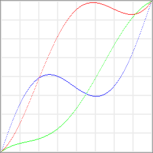
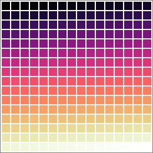

Description
Color Ramp Formulator is a desktop application used to generate algorithmically-defined color ramps, making use of formulas, such as:
cubehelix_color (t, 0, 0.55, 2, 1)
The result is a color ramp, which is defined as an ordered set of 256 RGB colors, and the data it represents can be displayed as a list, or previewed in three different ways:
- as a curves map:

- as a linear gradient:
- as a color table:

Color models
A color ramp can be calculated from a formula making use of helper functions supporting several color models among:
- RGB: Red, Green, Blue
- HSV: Hue, Saturation, Value; or HSB: Hue, Saturation, Brightness
- HWB: Hue, Whiteness, Blackness
- HSL: Hue, Saturation, Lightness
- HCL: Hue, Chroma, Luminance; or LCh: Luminance, Chroma, hue
- Lab: Luminance, a, b
- XYZ: X, Y, Z
- YCbCr: Y (Luma), Chroma blue, Chroma red
- CubeHelix HSL: Hue, Saturation, Lightness
Notes:
- RGB, HSL and HSV, HWB, are commonly used color models (HSV is also called HSB).
- HCL stands for CIELCh (LCh), which is a more intuitive color model than CIELAB (Lab). It uses the standard, widely-documented algorithm which assumes a 2° observer angle and a D65 illuminant, and applies a sRGB gamma correction.
- XYZ (CIEXYZ) is an intermediate color model used to convert between RGB and Lab.
- YCbCr is a color space used to represent digital component video and photography, and makes use of the full-range format for JPEG images.
- CubeHelix HSL is a clever adaptation of the original CubeHelix algorithm by Dave Green, to make it usable as an alternate HSL color model, as identified by Mike Bostock.
Formula format
A formula is just a JavaScript expression which always returns a RGB color array: [ Red, Green, Blue ], with each component value ranging from 0 to 255, regardless of any color model used by helper functions.
Normalizing (rounding and clipping) of each component value is automatically applied when the color ramp is actually generated.
Input variables
| Variable | Value | Description |
|---|---|---|
| x | 0 to 255 | The formula is evaluated in a loop for each value of x between 0 and 255. |
| t | 0.0 to 1.0 | Provided as a convenience: t = x / 255 |
Notes:
- Either x or t can be used in a formula, or even both.
- Some helper functions, such as lerp (), are actually expecting a variable t between 0.0 and 1.0.
Math constants
| Constant | Value | Description |
|---|---|---|
| E | 2.71828182845905 | Euler's constant, base of natural logarithms. |
| LN2 | 0.69314718055995 | Natural logarithm of 2. |
| LN10 | 2.30258509299405 | Natural logarithm of 10. |
| LOG2E | 1.44269504088869 | Base 2 logarithm of E. |
| LOG10E | 0.43429448190325 | Base 10 logarithm of E. |
| PI | 3.14159265358979 | π, the ratio of the circumference of a circle to its diameter. |
| SQRT1_2 | 0.70710678118655 | Square root of 1/2; equivalently, 1 over the square root of 2. |
| SQRT2 | 1.41421356237310 | Square root of 2. |
Math functions
| Function | Parameters | Description |
|---|---|---|
| abs (a) | a: number | Returns the absolute value of (a). |
| acos (a) | a: number | Returns the arccosine of (a), from 0 to π. |
| asin (a) | a: number | Returns the arcsine of (a), from −π/2 to π/2. |
| atan (a) | a: number | Returns the arctangent of (a), from −π/2 to π/2. |
| atan2 (a, b) | a, b: numbers | Returns the arctangent of the quotient (a/b) of its arguments (a) and (b), from −π to π. |
| ceil (a) | a: number | Returns the smallest integer greater than or equal to (a). |
| cos (a) | a: number | Returns the cosine of (a). |
| exp (a) | a: number | Returns Ea, where E is Euler's constant, the base of the natural logarithm. |
| floor (a) | a: number | Returns the largest integer less than or equal to (a). |
| log (a) | a: number | Returns the natural (base E) logarithm of (a). |
| max (a[, b[, …]]) | a, b, …: numbers | Returns the largest value from the numbers (a), (b), …. |
| min (a[, b[, …]]) | a, b, …: numbers | Returns the smallest value from the numbers (a), (b), …. |
| pow (a, b) | a, b: numbers | Returns base to the exponent power, that is, ab. |
| random ( ) | Returns a pseudo-random number between 0 (inclusive) and 1 (exclusive). | |
| round (a) | a: number | Returns the value of (a) rounded to the nearest integer. |
| sin (a) | a: number | Returns the sine of (a). |
| sqrt (a) | a: number | Returns the positive square root of (a). |
| tan (a) | a: number | Returns the tangent of (a). |
Components helper functions
| Function | Parameters | Description |
|---|---|---|
| bias (t, b) | t, b: numbers | Returns a value in the interval [0.0, 1.0] for a parameter (t) in the same interval. bias defines a kind of brightness curve controlled by the parameter (b) in the interval ]0.0, 1.0[. For (b) equal to 0.5, bias is the identity function. |
| coserp (a, b, t) | a, b, t: numbers | Returns a cosine interpolated value between two values (a) and (b) for a parameter (t) in the interval [0.0, 1.0]. coserp is a common function name for cosine interpolation. |
| cubic (coeffs, x) | coeffs: array of numbers [ a, b, c, d ] x: number |
Returns the value of the cubic function: ax3 + bx2 + cx + d. |
| distribute (values, bounds, position, smoothness) |
values: array bounds: array position: number smoothness: number |
Returns an interpolated value at (position) from an array of (values) evenly distributed within (bounds). The shape of the resulting interpolation curve is controlled by the optional parameter (smoothness) between 0 (by default) and 100: a value of 0 implies a linear interpolation, while 100 indicates a smooth pchip interpolation. |
| gain (t, g) | t, g: numbers | Returns a value in the interval [0.0, 1.0] for a parameter (t) in the same interval. gain defines a kind of contrast curve controlled by the parameter (g) in the interval ]0.0, 1.0[. For (g) equal to 0.5, gain is the identity function. |
| interpolate (points, position, smoothness) |
points: array position: number smoothness: number |
Returns an interpolated value at (position) from an array of (points) in ascending order, each point being defined as an array of two numbers: [ position, value ]. The shape of the resulting interpolation curve is controlled by the optional parameter (smoothness) between 0 (by default) and 100: a value of 0 implies a linear interpolation, while 100 indicates a smooth pchip interpolation. |
| lerp (a, b, t) | a, b, t: numbers | Returns a linearly interpolated value between two values (a) and (b) for a parameter (t) in the interval [0.0, 1.0]. lerp is a common function name for linear interpolation. |
| linear (coeffs, x) | coeffs: array of numbers [ a, b ] x: number |
Returns the value of the linear function: ax + b. |
| pchip (points, position) |
points: array position: number |
Returns a shape-preserving interpolated value at (position) from an array of (points) in strict ascending order, each point being defined as an array of two numbers: [ position, value ]. PCHIP stands for “Piecewise Cubic Hermite Interpolation Polynomial”. |
| polynomial (coeffs, x) | coeffs: array of n numbers x: number |
Returns the value of a generic polynomial function of degree n. |
| quadratic (coeffs, x) |
coeffs: array of numbers [ a, b, c ] x: number |
Returns the value of the quadratic function: ax2 + bx + c. |
| smootherstep (a, b, t) |
a, b, t: numbers | Returns a smootherstep interpolated value between two values (a) and (b) for a parameter (t) in the interval [0.0, 1.0]. |
| smoothstep (a, b, t) |
a, b, t: numbers | Returns a smoothstep interpolated value between two values (a) and (b) for a parameter (t) in the interval [0.0, 1.0]. |
| spline (points, position, compatible) |
points: array position: number compatible: boolean |
Returns an interpolated value at (position) from a natural cubic spline passing through an array of (points) in ascending order, each point being defined as an array of two numbers: [ position, value ]. In Photoshop-compatible mode (true), extrapolated values are set to the endpoint values. |
Notes:
- The bias and gain functions were first described by Ken Perlin and Eric M. Hoffert (Hypertexture). This script makes use of the faster alternative method designed by Christophe Schlick (Fast Alternatives to Perlin’s Bias and Gain Functions).
- The code for the shape-preserving pchip function is based on Piecewise Cubic Hermite Interpolation and Monotone cubic interpolation.
- The code for spline (spline interpolation) is adapted from CSPL.js by Ivan Kuckir.
RGB colors helper functions
| Function | Parameters | Description |
|---|---|---|
| grayscale (gray) | gray: number | Returns a RGB color array. Ex: grayscale (127.5) |
| rgb (red, green, blue) |
red: number green: number blue: number |
Returns a RGB color array. Ex: rgb (0, 255, 0) |
| hsb (hue, saturation, brightness) |
hue: number saturation: number brightness: number |
Returns a RGB color array. Ex: hsb (120, 100, 100) |
| hsv (hue, saturation, value) |
hue: number saturation: number value: number |
Returns a RGB color array. Ex: hsv (120, 100, 100) |
| hwb (hue, whiteness, blackness) |
hue: number whiteness: number blackness: number |
Returns a RGB color array. Ex: hwb (120, 0, 0) |
| hsl (hue, saturation, lightness) |
hue: number saturation: number lightness: number |
Returns a RGB color array. Ex: hsl (120, 100, 50) |
| hcl (hue, chroma, luminance) |
hue: number chroma: number luminance: number |
Returns a RGB color array. Ex: hcl (136, 119.8, 87.7) |
| lch (luminance, chroma, hue) |
luminance: number chroma: number hue: number |
Returns a RGB color array. Ex: lch (87.7, 119.8, 136) |
| lab (luminance, a, b) |
luminance: number a: number b: number |
Returns a RGB color array. Ex: lab (87.7, -86.2, 83.2) |
| xyz (x, y, z) |
x: number y: number z: number |
Returns a RGB color array. Ex: xyz (35.7, 71.5, 11.9) |
| ycbcr (y, cb, cr) |
y: number cb: number cr: number |
Returns a RGB color array. Ex: ycbcr (149, 43, 21) |
| cubehelix (hue, saturation, lightness) |
hue: number saturation: number lightness: number |
Returns a RGB color array. Ex: cubehelix (110, 192, 59) |
Notes:
- The hsb and hsv functions are the same, only the name of the third parameter differs (brightness or value).
- The hcl and lch functions are the same, except that their parameters are in reverse order.
| Function | Parameters | Description |
|---|---|---|
| grayscale_t (gray_t) | gray_t: number | Returns a RGB color array. Ex: grayscale_t (0.5) |
| rgb_t (red_t, green_t, blue_t) |
red_t: number green_t: number blue_t: number |
Returns a RGB color array. Ex: rgb_t (0, 1, 0) |
| hsb_t (hue_t, saturation_t, brightness_t) |
hue_t: number saturation_t: number brightness_t: number |
Returns a RGB color array. Ex: hsb_t (1/3, 1, 1) |
| hsv_t (hue_t, saturation_t, value_t) |
hue_t: number saturation_t: number value_t: number |
Returns a RGB color array. Ex: hsv_t (1/3, 1, 1) |
| hwb_t (hue_t, whiteness_t, blackness_t) |
hue_t: number whiteness_t: number blackness_t: number |
Returns a RGB color array. Ex: hwb_t (1/3, 0, 0) |
| hsl_t (hue_t, saturation_t, lightness_t) |
hue_t: number saturation_t: number lightness_t: number |
Returns a RGB color array. Ex: hsl_t (1/3, 1, 0.5) |
| hcl_t (hue_t, chroma_t luminance_t) |
hue_t: number chroma_t: number luminance_t: number |
Returns a RGB color array. Ex: hcl_t (0.3778, 0.9359, 0.8770) |
| lch_t (luminance_t, chroma_t, hue_t) |
luminance_t: number chroma_t: number hue_t: number |
Returns a RGB color array. Ex: lch_t (0.8770, 0.9359, 0.3778) |
| lab_t (luminance_t, a_t, b_t) |
luminance_t: number a_t: number b_t: number |
Returns a RGB color array. Ex: lab_t (0.8770, -0.6734, 0.6500) |
| xyz_t (x_t, y_t, z_t) |
x_t: number y_t: number z_t: number |
Returns a RGB color array. Ex: xyz_t (0.357, 0.715, 0.119) |
| ycbcr_t (y_t, cb_t, cr_t) |
y_t: number cb_t: number cr_t: number |
Returns a RGB color array. Ex: ycbcr_t (0.59, 0.17, 0.00) |
| cubehelix_t (hue_t, saturation_t, lightness_t) |
hue_t: number saturation_t: number lightness_t: number |
Returns a RGB color array. Ex: cubehelix_t (0.305, 1.922, 0.590) |
Notes:
- The hsb_t and hsv_t functions are the same, only the name of the third parameter differs (brightness_t or value_t).
- The hcl_t and lch_t functions are the same, except that their parameters are in reverse order.
| Function | Parameters | Description |
|---|---|---|
| interpolate_colors (stops, location, color_model, smoothness) |
stops: array location: number color_model: string smoothness: number (or array of 3 numbers) |
Returns an interpolated color at (location) from an array of (stops) in ascending order, each stop being defined as an array of two elements: [ position, color ], according to (color_model) among: "rgb", "lab", "xyz", "ycbcr", "hsv", "hsb", hwb", "hsl", "hcl", "lch", or "cubehelix".A hue mode is also appended as a suffix to the hue-based color models, among: "-inc" (or "-asc"), "-dec" (or "-desc"), "-near" (or "-short"), "-far" (or "-long").The (smoothness) parameter is an optional value between 0 (by default) and 100: a value of 0 implies a linear interpolation, while 100 indicates a pchip interpolation; alternatively, an array of three such values can be passed to independently control the smoothness of each component of the color model. |
| distribute_colors (colors, bounds, location, color_model, somoothness) |
colors: array bounds: array location: number color_model: string smoothness: number (or array of 3 numbers) |
Returns an interpolated color at (location) from an array of (colors) evenly distributed within (bounds), according to (color_model) among: "rgb", "lab", "xyz", "ycbcr", "hsv", "hsb", hwb", "hsl", "hcl", "lch", or "cubehelix".A hue mode is also appended as a suffix to the hue-based color models, among: "-inc" (or "-asc"), "-dec" (or "-desc"), "-near" (or "-short"), "-far" (or "-long").The (smoothness) parameter is an optional value between 0 (by default) and 100: a value of 0 implies a linear interpolation, while 100 indicates a pchip interpolation; alternatively, an array of three such values can be passed to independently control the smoothness of each component of the color model. |
| discrete_colors (colors, bounds, location, average) |
colors: array bounds: array location: number average: boolean |
Returns a color at (location) within (bounds) from an array of (colors). The last optional parameter (average), false by default, allows more visually equal ranges by generating extra transitions between consecutive colors. |
| cubehelix_color (t, start, rotations, saturation, gamma, lightness) |
t: number start: number rotations: number saturation: number gamma: number lightness: number (or array of 2 numbers) |
Returns a "CubeHelix" color at position (t) in the interval [0.0, 1.0], according to the parameters: (start), (rotations), (saturation), and (gamma), as described in the document: A colour scheme for the display of astronomical intensity images, by Dave Green. All parameters beyond (t) are optional, with default values provided: 0.5, -1.5, 1, and 1, respectively.An extra optional parameter (lightness), with default value: [ 0, 1 ], can also be used to adjust the lightness range (black to white by default). |
| wavelength_color (w) | w: number | Returns a color corresponding to the wavelength of light (w) expressed in nanometers, visible to the human eye from around 380 to 780. |
| transform_color (color, hue_shift, saturation_multiplier, lightness_multiplier) |
color: array of 3 numbers, or string hue_shift: number saturation_multiplier: number lightness_multiplier: number |
Returns a transformed color of (color), according to differential HSL parameters: (hue_shift), (saturation_multiplier), (lightness_multiplier). All parameters beyond (color) are optional, with default values provided: 0, 1, and 1, respectively.The parameter (hue_shift) is expressed in degrees. |
When calling the functions interpolate_colors, distribute_colors, discrete_colors, and transform_color, each RGB color can be defined in several ways:
- as a RGB color array; ex:
[ 0, 255, 0 ], - as a color hex string in HTML/CSS hexadecimal notation; ex:
"#00FF00"or"#0F0", - as a color name string belonging to the sets: W3C (default), X11, XKCD, and Mac OS; ex:
"lime"or"w3c/lime"or"x11/green"or"xkcd/fluorescent_green", or"mac/spring".
See the Lists of Color Names page for a list of all available color names, sorted alphabetically.
A RGB color can also be obtained by using one of the specialized color conversion functions: grayscale, rgb, hsb, etc., or grayscale_t, rgb_t, hsb_t, etc.
Extra functions
| Function | Parameters | Description |
|---|---|---|
| rgb_color_t (rgb_t) | rgb_t: array | Returns a scaled ([0.0, 1.0] to [0, 255]) RGB color array. Ex: rgb_color_t ([ 0, 1, 0 ]) |
| rgb_colors_t (colors_t) | colors_t: array | Returns an array of scaled ([0.0, 1.0] to [0, 255]) RGB color arrays. Ex: rgb_colors_t ([ [ 0, 0, 0 ], [ 1, 1, 1 ] ]) |
Online references
Color algorithms
- Dave Green's `cubehelix' colour scheme
- Examples of Dave Green's `cubehelix' colour scheme
- A colour scheme for the display of astronomical intensity images (PDF)
- Cubehelix, or How I Learned to Love Black & White Printers
- How to Choose Colours Procedurally (Algorithms) – Dev.Mag
- Algorithm for automatic harmonious color selection for the image
- Designing Systematic Colors - UX Planet
- chroma.js api docs!
- Approximate RGB values for Visible Wavelengths
- Hue-Preserving Color Blending (PDF)
- Perceptual rainbow palette – the method | MyCarta
- Colormap compromise | MyCarta
- A Less-Angry Rainbow - bl.ocks.org
- Color Map Advice for Scientific Visualization
- Diverging Color Maps for Scientific Visualization
- Diverging Color Maps for Scientific Visualization (Expanded) (PDF)
- How to Manipulate Colors in JavaScript Using Chroma.js
- Mastering Multi-hued Color Scales with Chroma.js
- How To Avoid Equidistant HSV Colors
- Making a useful LCh color palette
- R Graphics: Color Ramp Functions | Applied R Code
- R Graphics: Heat Colors | Applied R Code
- Code: Affine HSV color manipulation
Color names
- <color> - CSS: Cascading Style Sheets | MDN
- Extended color keywords | CSS Color Module Level 3
- Named Colors | CSS Color Module Level 4
- Changes from Colors 3 | CSS Color Module Level 4
- “Tomato” versus “#FF6347”—the tragicomic history of CSS color names | Ars Technica
- X11 color names - Wikipedia
- Colors of /usr/lib/X11/rgb.txt
- /usr/lib/X11/rgb.txt
- List of colors by shade - Wikipedia
- Shades of white - Wikipedia
- Shades of gray - Wikipedia
- Shades of black - Wikipedia
- Shades of magenta - Wikipedia
- Shades of pink - Wikipedia
- Shades of red - Wikipedia
- Shades of brown - Wikipedia
- Shades of orange - Wikipedia
- Shades of yellow - Wikipedia
- Shades of green - Wikipedia
- Shades of cyan - Wikipedia
- Shades of blue - Wikipedia
- Shades of violet - Wikipedia
- Shades of purple - Wikipedia
Color theory
- Experilous: Make It Colorful
- The science and mathematics of color
- Colour Spaces
- Light and Color
- Color Center
- Color Theory/Color gradient - Wikibooks
- RGB color model - Wikipedia
- HSL and HSV - Wikipedia
- HWB color model - Wikipedia
- CIELAB color space - Wikipedia
- CIE 1931 color space - Wikipedia
- YCbCr - Wikipedia
- Color gradient - Wikipedia
Color tools
- Free Color Tools For Designers - Prototypr
- Free Color Tools for Designers — Vol. 2 🌈 - Prototypr
- Best Color Palette Generators — HTML Color Codes
- Color Converter - Online Free Tool | W3docs
- Colorizer - Color picker and converter (RGB HSL HSB/HSV CMYK HEX LAB)
- Analysis & Conversion • Color Explorer
- Color Converter | Html Colors
- Color Mixer | Html Colors
- Gradient Generator | Html Colors
- Color Ramps Generator
- Tools - Colordesigner
- ColorSpace - Color Palettes Generator and Color Gradient Tool
- Quick Tip: How to Manipulate Colors in JavaScript using Chroma.js
- Scale — color scale generator
- Colormind - the AI powered color palette generator
- Systematic Color Palette Generator
- Lch and Lab colour and gradient picker — David Johnstone
- Cubehelix gradient picker — David Johnstone
- Chroma.js Color Palette Helper
- Chroma.js Color Scale Helper
- Colorpicker for data | tristen
- RGB Color Gradient Maker
- Dave Green's `cubehelix' colour schemes
- Demo of the cubehelix NPM library
- cptutils online | select
- ColorBrewer: Color Advice for Maps
Data vizualization
- Elegant Figures - Subtleties of Color (Part 1 of 6)
- Elegant Figures - Subtleties of Color (Part 2 of 6)
- Elegant Figures - Subtleties of Color (Part 3 of 6)
- Elegant Figures - Subtleties of Color (Part 4 of 6)
- Elegant Figures - Subtleties of Color (Part 5 of 6)
- Elegant Figures - Subtleties of Color (Part 6 of 6)
- Elegant Figures - Subtleties of Color (Part 6.5 of 6)
- Choosing color palettes
- Rainbow Colormaps – What are they good for? Absolutely nothing! | medvis.org
- Better than the rainbow: The Matplotlib alternative colormaps | medvis.org
- How Bad Is Your Colormap?
- Color Coding for Data Visualization
- CET Perceptually Uniform Colour Maps
- Overview of the ‘pals’ package
- The rainbow is dead…long live the rainbow! – series outline | MyCarta
- Color Palettes | MyCarta
- Why Should Engineers and Scientists Be Worried About Color (PDF)
- Google AI Blog: Turbo, An Improved Rainbow Colormap for Visualization
JavaScript code evaluation
- Esprima
- esprima/getting-started.md at master · jquery/esprima · GitHub
- esprima/syntactic-analysis.md at master · jquery/esprima · GitHub
- esprima/lexical-analysis.md at master · jquery/esprima · GitHub
- GitHub - browserify/static-eval: evaluate statically-analyzable expressions
- maustin.net | Unsafe Code Execution in static-eval
- static-eval sandbox escape original writeup | Licencia para Hackear
- Bypassing a restrictive JS sandbox | Licencia para Hackear
© Copyright 2020 Michel MARIANI.